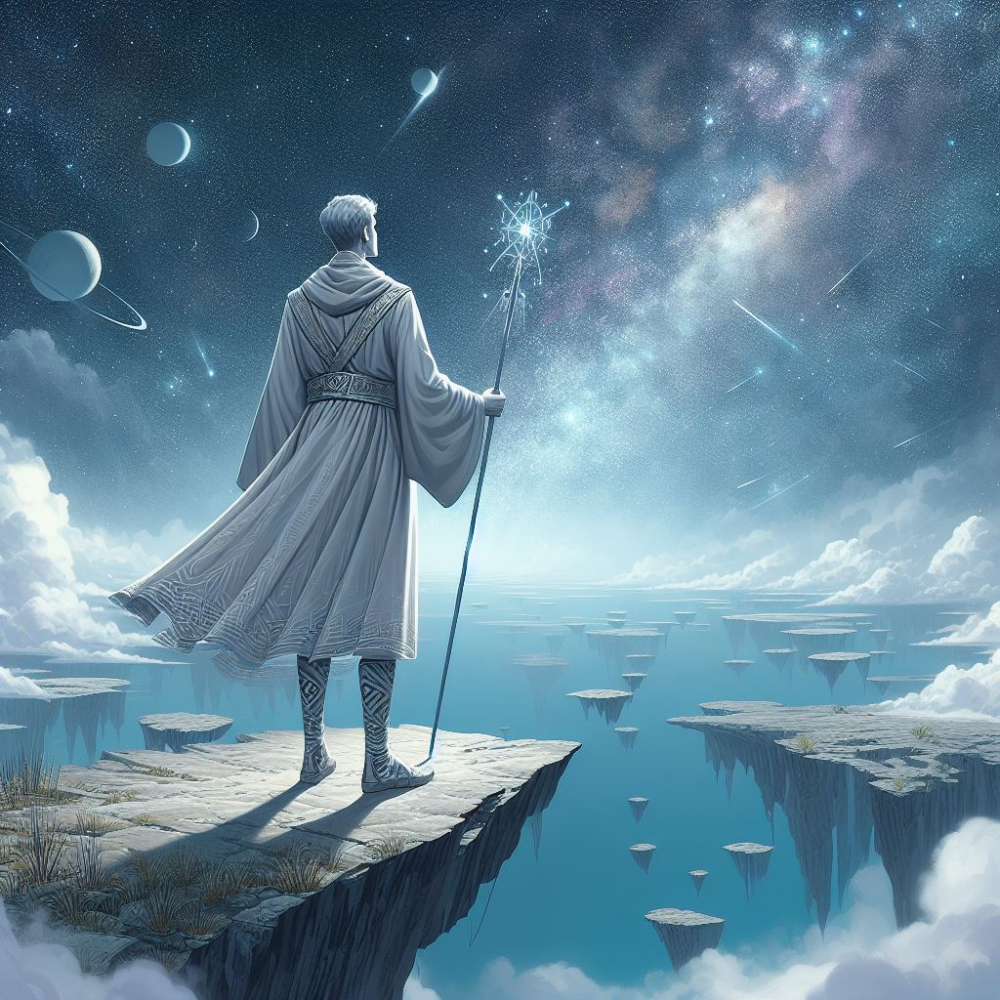
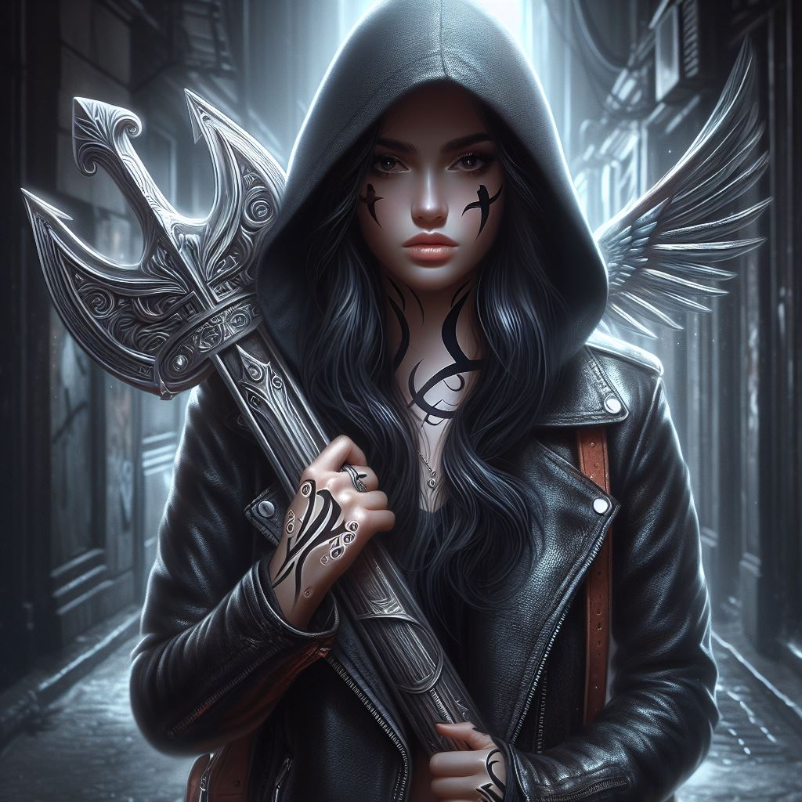
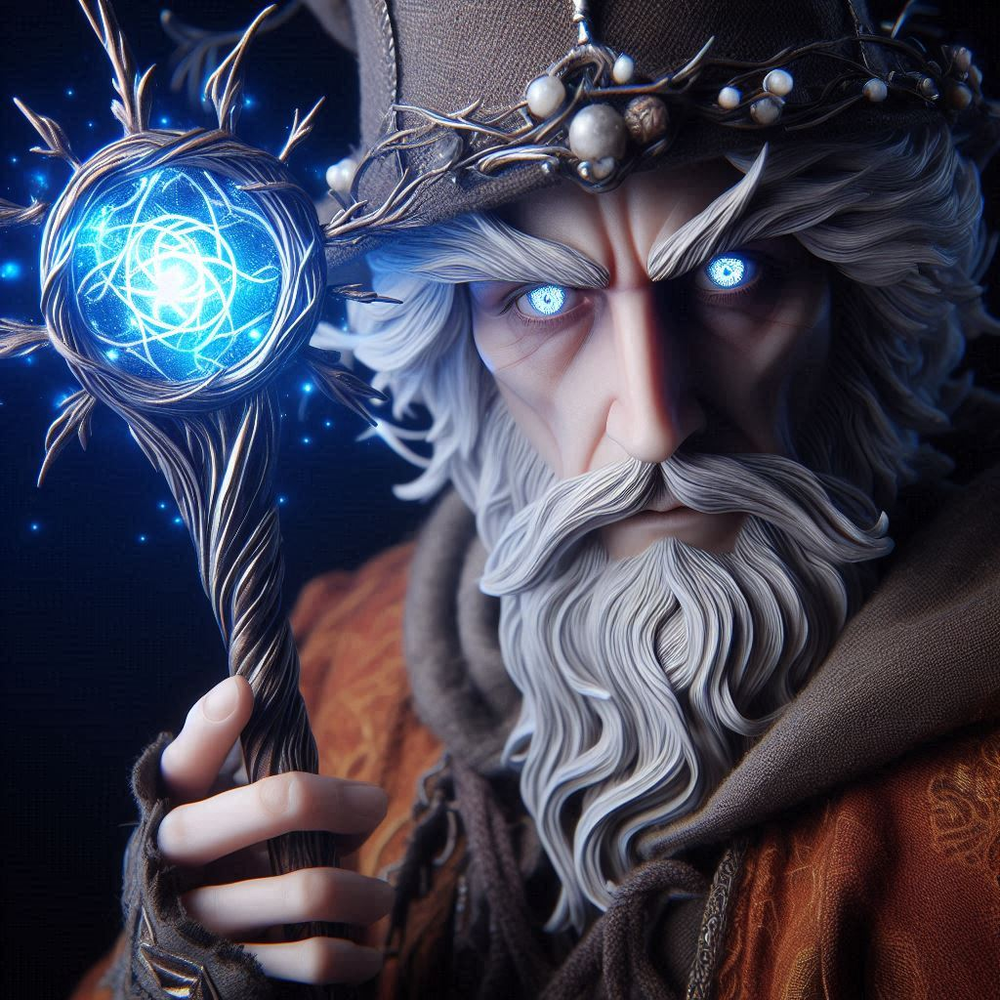
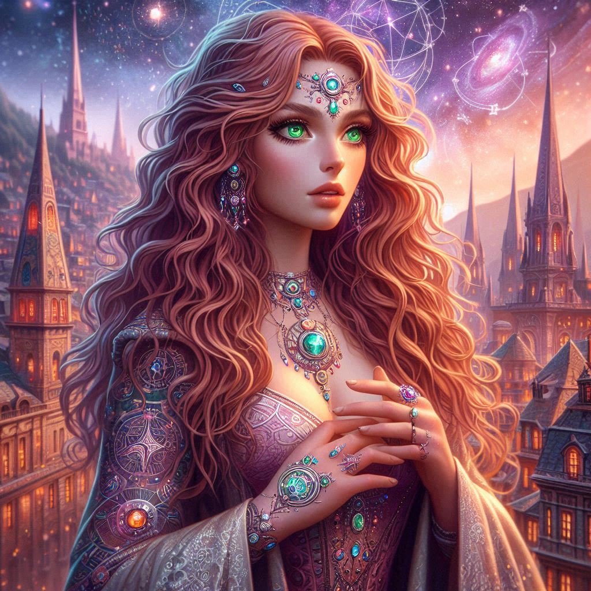
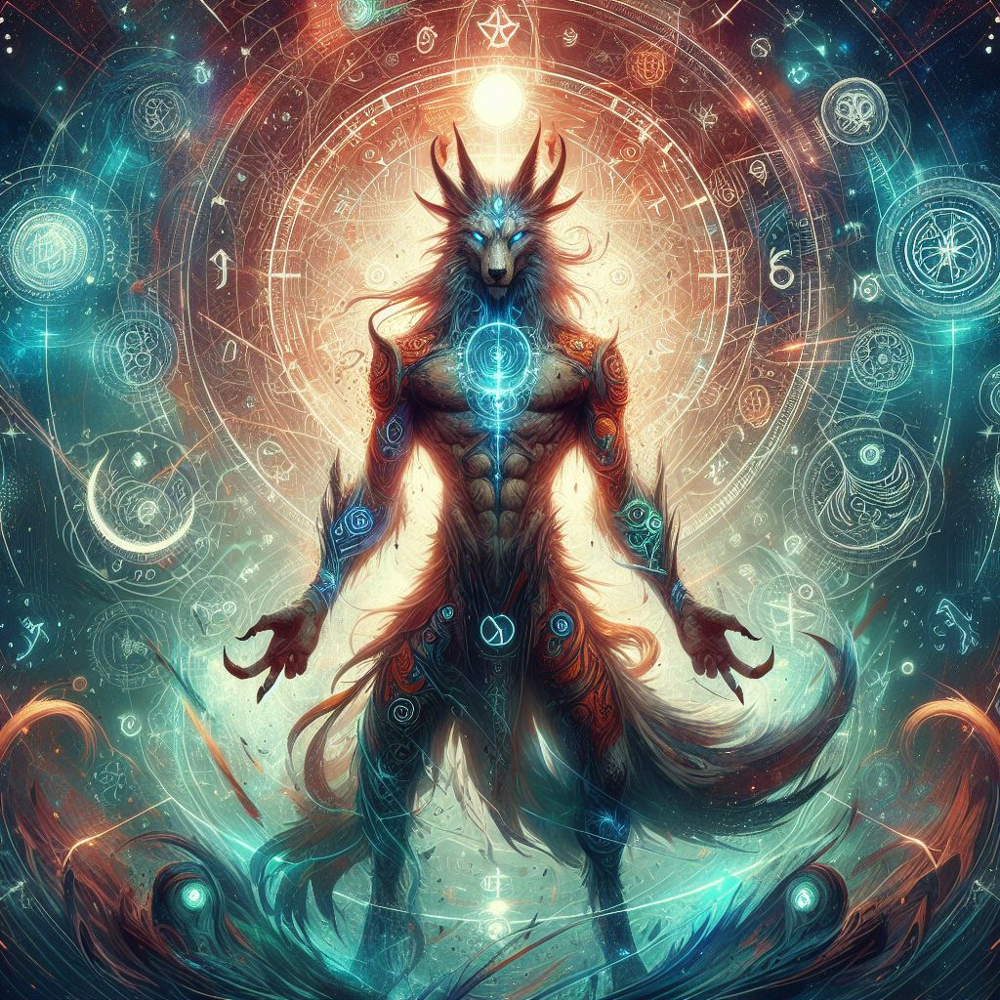
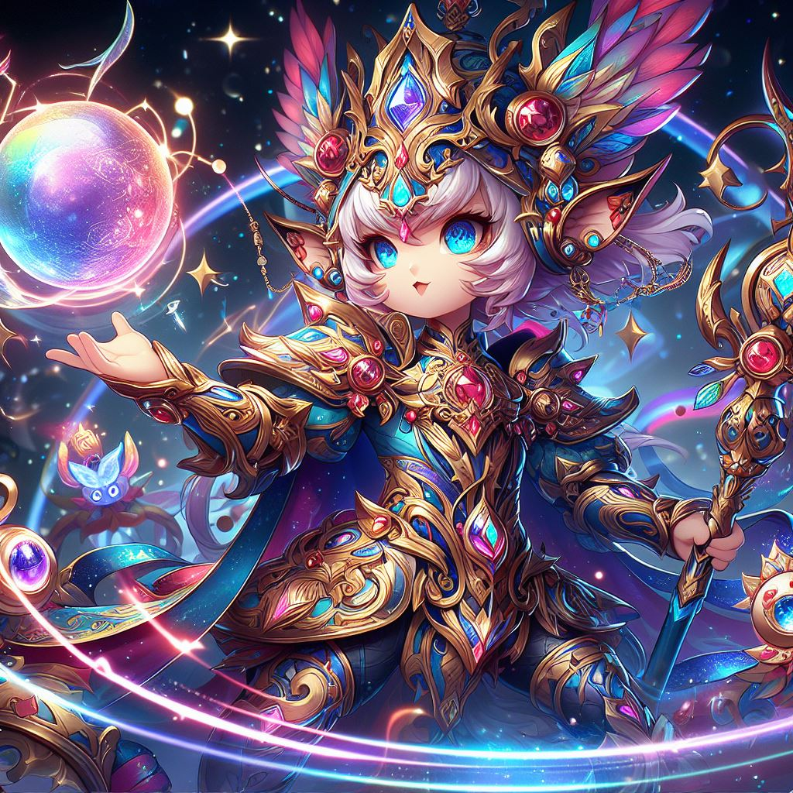
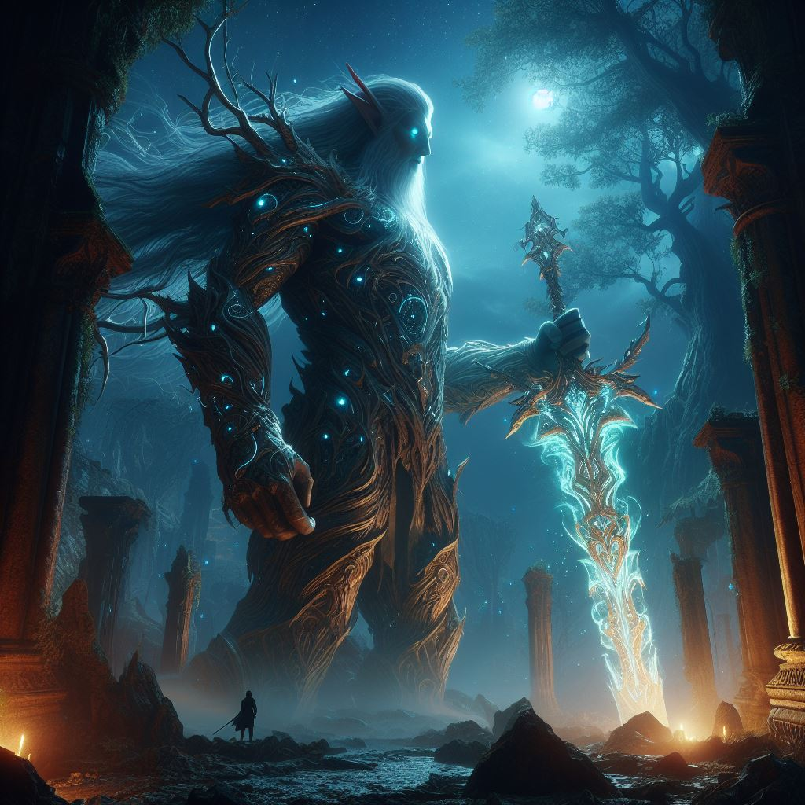

Diseño en el siglo XXI
Aquí encontraras personajes de ficción diseñados con IA
esta es la revolucionaria forma de diseñar en el siglo XXI
Las siguientes imagenes son libres de copyright
      
El diseño ha sido marcado por la integración de tecnología con acceso a herramientas digitales avanzadas que les permite crear a los diseñadores de manera más eficiente y colaborativa.
en el siglo XXI se caracteriza por un enfoque más humano, donde se valora no solo la ejecución del arte, sino también lo que se quiere transmitir y cómo se interpreta. El énfasis ya no recae únicamente en la ejecución, sino en la conexión emocional y la expresión del mensaje.
Dejenos sus opiniones: